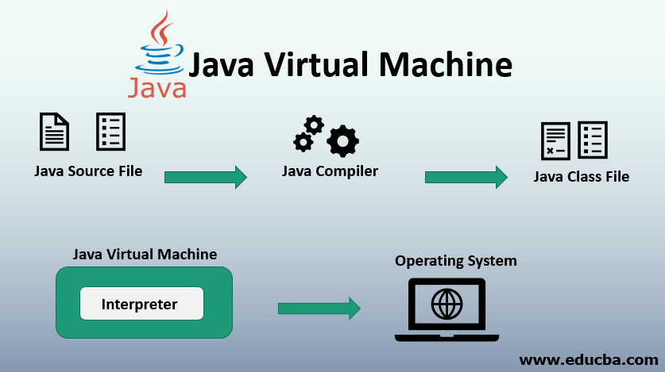

flowchart LR array["4, 2, 3"] a --> array b --> array
CM1 - Syntaxe de base
1 Introduction

1.1 Pourquoi apprendre Java
- Programmation Orientée Objet
- Toujours populaire
- Développement Backend 1
- Apps Android
1.2 Historique
- 1996 Java 1.0, première version publique.

“Write Once, run anywhere” - 1998 Java 1.2: API Collections
- 2006 Open source, license GPL
- 2010 Oracle acquiert Sun Microsystems

- 2004 Java SE 5.0: Type Génériques
- 2014 Java SE 8: Streams
- 2021 Java SE 17 LTS: pattern matching, sealed
- 2025 Java SE 25 LTS
Les versions “LTS” : Long Term Support sont a privilégier pour leur stabilité.
1.3 Références
- JDK 22 Documentation
- The Java Tutorials
- JetBrains Hyperskill
- “Programmer avec Java” O’Reilly 2019
- Plus récent: “Java in a Nutshell, 8th edition” 2
2 Java, JVM, JDK

La Java Virtual Machine est une “machine” qui va interpréter et exécuter du bytecode java. Le code source .java est compilé en bytecode dans un fichier .class.
2.1 Caractéristiques de la JVM
- indépendance. Write Once, Run Anywhere
- gestion mémoire
- sécurité
- chargement dynamique
- compilation Just In Time
- multithreading
- d’autres langages peuvent être utilisés: Scala, Kotlin, Clojure, Groovy
Note
- plusieurs implémentations de la JVM co-existent: Oracle JDK, OpenJDK, Zulu, GraalVM, …
- indépendance de la plate-forme: le même bytecode peut être exécuté sur Windows x86, Mac, Linux ARM, …
- gestion de la mémoire: La JVM gère sa mémoire automatiquement grâce à son Garbage Collector (GC). Le GC permet aux développeurs de ne pas se soucier de la libération mémoire des objets.
- chargement dynamique: les classes sont chargées au “runtime”.
- sécurité: des “policies” permettent de contrôler l’accès aux resources système.
- JIT: le bytecode exécuté fréquemment est compilé en language machine
- multithreading: Plusieurs tâches peuvent être exécutées en même temps.
2.2 Le Garbage Collector (ramasse-miettes)
- Gestion de la mémoire automatique
- Les objets sont détruits lorsqu’ils ne sont plus utilisés.
- vous ne pouvez pas détruire l’objet vous-même!
Le GC est un avantage majeur par rapport à d’autres langages objets comme C++. Un inconvénient est qu’il peut parfois geler le programme en cours d’exécution (Stop The World).
2.3 Le JDK (Java Development Kit)
- Ensemble d’outils dont le développeur a besoin pour réaliser des programmes en Java
- Examples de programmes contenus dans le JDK:
javac.exe: le compilateur Javajava.exe: la machine virtuellejavadoc.exe: le générateur de documentationjar.exe: permet de créer des fichiers “.jar” contenant tous les .class d’une bibliothèque ou d’une application.jshell.exe: permet d’exécuter du code Java rapidement avec un REPL
- Le JDK est installé automatiquement avec IntelliJ IDEA
- Vous pouvez choisir d’installer une autre version ou une autre implémentation
3 Syntaxe de base
3.1 Anatomie d’un programme Java
- compiler:
javac PremierProgramme.java - exécuter:
java PremierProgramme
PremierProgrammeest le nom de la classe principalemainest la procédure point d’entrée du programme.- elle prend en paramètre un tableau de
String, qui contient les arguments du programme - elle ne renvoie rien, son type de retour est
void
- elle prend en paramètre un tableau de
System.out.printlnest une fonction qui permet d’écrire sur la sortie standard.- chaque instruction se termine par
; - commentaires de code:
//pour un commentaire sur une ligne/*au début et*/à la fin pour un commentaire multi-ligne/**au début et*/à la fin pour la documentation
publicest un modificateur de visibilité. Nous les verrons plus tard.staticest un modificateur qui indique que la procéduremainappartient à la classe elle-même. Nous verrons son rôle plus tard.
3.2 Déclaration de variable
- case-sensitive:
myVariableest différent demyvariable - convention
- camel case:
thisIsALongVariableName - premier caractère en minuscules.
- camel case:
3.3 Exemples de déclarations
3.4 Affectation
Déclaration et affectation en une ligne:
3.5 Types
- types primitifs: l’affectation copie la valeur
byte,short,int,long: entiers signés sur 8, 16, 32, 64 bitsfloat,double: nombre virgule flottante sur 32 ou 64 bitsbooleanchar: caractère
- tableaux et objets: l’affectation copie une référence, similaire à un pointeur en C
La classe String est le type chaîne de caractères. Nous verrons les classes dans le cours suivant.
3.6 Références
3.6.1 Types primitifs
La valeur est copiée.
3.6.2 Objets et tableaux
La référence est copiée, les 2 variables pointent sur le même tableau.
Tip
On peut utiliser System.arraycopy pour copier les cellules d’un tableau
3.7 Opérateurs arithmétiques
| opérateur | description | exemple |
|---|---|---|
| + | addition | 2 + 2 |
| + | concaténation de String | "Hello " + " world" |
| - | soustraction | 3 - 2 |
| * | multiplication | 3 * 4 |
| / | division | 40 / 3 |
| % | modulo (reste de la division) | 10 % 3 |
3.8 Affectations avec opérateurs arithmétiques
| opérateur | exemple | équivalent à |
|---|---|---|
| += | a += 4 | a = a + 4 |
| ++ | a++ | a = a + 1 |
| -= | a -= 4 | a = a - 4 |
| – | a– | a = a - 1 |
| *= | a *= 2 | a = a * 2 |
| /= | a /= 2 | a = a / 2 |
3.9 Opérateurs relationnels
| opérateur | description |
|---|---|
| == | égalité |
| != | différent de |
| > | supérieur à |
| >= | supérieur ou égal à |
| < | inférieur à |
| <= | inférieur ou égal à |
Warning
==sur des objets compare la référence et non le contenu!- Pour comparer le contenu de deux objets, on utilisera
equals()
3.10 Opérateurs logiques
| opérateur | description | exemple |
|---|---|---|
| && | et | i > 2 && i < 4 |
| || | ou | s == "hello" || s == "world" |
| ! | non | !(i > 2) |
| ?: | ternaire (if-then-else) | i > 10 ? "big" : "small" |
Note
Il existe également des opérateurs “bitwise” et “bit shift”, qui manipulent les bits d’un entier. Ils peuvent être utiles pour optimiser certains algorithmes.
3.11 Expressions vs instructions
- une expression est composée de variables, opérateurs et invocations de méthodes
- son évaluation produit une seule valeur
- exemples d’expressions:
- une instruction (statement) est équivalent à une phrase. Elle doit se terminer par un
; - exemples d’instructions:
3.12 Notion de bloc
- un bloc d’instructions est compris entre 2 accolades
{et} - les déclarations de variables contenues dans le bloc ont une portée limitée à ce bloc.
- un bloc peut accéder aux variables du bloc qui l’englobe.
4 Instructions conditionnelles
4.1 if-else
- Forme générale
- Exemple
- Exemple avec plusieurs if
Note
La convention en Java est de faire démarrer l’accolade ouvrante { sur la même ligne que le if ou le else
Tip
Les accolades ne sont pas obligatoires si il n’y a qu’une instruction à exécuter.
4.2 switch-case
4.3 switch-case - exemple
switch (mois) {
case 1: // Janvier
case 3: // Mars
case 5: // Mai
case 7: // Juillet
case 8: // Août
case 10: // Octobre
case 12: // Décembre
jours = 31;
break;
case 4: // Avril
case 6: // Juin
case 9: // Septembre
case 11: // Novembre
jours = 30;
break;
case 2: // Février
// Vérification si l'année est bissextile
if ((annee % 4 == 0 && annee % 100 != 0) || (annee % 400 == 0)) {
jours = 29; // Année bissextile
} else {
jours = 28; // Année non bissextile
}
break;
default:
System.out.println("Numéro de mois invalide.");
break; // On arrête l'exécution du programme
}4.4 switch-case - Java 17
Les versions 12, 14 et 17 de Java ont grandement amélioré les possibilités du switch:
switchpeut maintenant être une expressionint jours = switch(...). C’est plus concis et évite d’oublier lesbreak.- les
casepeuvent “matcher” plusieurs valeurs - on peut ajouter des “guarded” condition avec
when
int jours = switch (mois) {
case 1, 3, 5, 7, 8, 10, 12 -> 31; // Mois de 31 jours
case 4, 6, 9, 11 -> 30; // Mois de 30 jours
case 2 when (annee % 4 == 0 && annee % 100 != 0) || (annee % 400 == 0) -> 29; // Février bissextile
case 2 -> 28; // Février non bissextile
default -> {
System.out.println("Numéro de mois invalide.");
yield -1; // Valeur d'erreur
}
};5 Boucles
5.1 while
Exemple:
5.2 do-while
Exemple:
- la différence est que dans le cas du
do...while, les instructions du bloc sont toujours exécutées au moins une fois, même si la condition estfalse.
5.3 for
- l’instruction d’initialisation est exécutée une seule fois.
- tant que l’expression
tant_queesttrue, la boucle continue - l’instruction d’incrément est invoquée après chaque itération
5.4 for - exemples
- faire varier i de 0 à 9
- faire varier i de 9 à 0. S’arrêter dès qu’on trouve
valeurdansarray.
6 Classe et Objet
6.1 Classe
Une classe permet de déclarer un nouveau type qui permet de regrouper:
- une liste d’attributs
- caractéristiques ou propriétés
- une liste de constructeurs
- fonctions qui permettent d’initialiser les attributs lors de la création d’un objet.
- Ils n’ont pas de type de retour car ils renvoient toujours le type de la classe
- une liste de méthodes
- fonctions ou procédures qui peuvent modifier ou lire les attributs
6.2 Classe - exemple
Les attributs et méthodes constituent les membres de la classe.
6.3 Objet
- La classe est comme un moule à partir duquel on peut faire des gâteaux: les objets
- Un objet est en quelque sorte un exemplaire de la classe, qui va occuper une zone mémoire.
- Lorsqu’on crée un nouvel objet, on dit qu’on instancie un objet de la classe.
- Pour instancier un objet, il faut utiliser
newet appeler l’un des constructeurs.
6.4 Accéder aux membres
Pour accéder à un attribut d’un objet ou pour appeler une méthode, il faut utiliser le point:
Avec la classe Person:
6.5 Attributs
Ils se déclarent comme ceci:
On peut leur donner une valeur par défaut:
Exemple:
6.6 Constructeurs
Ils se déclarent comme ceci:
- Dans le corps d’un constructeur, on fait souvent appel au mot-clé
this, qui référence l’objet en cours de création. - Vous pouvez déclarer plusieurs constructeurs par classe. Ils doivent par contre avoir une signature différente.
Note
Si vous ne déclarez pas de constructeur, Java va déclarer un constructeur sans paramètre par défaut. Il faut en effet toujours pouvoir instancier la classe.
6.7 Méthodes
Elles se déclarent comme ceci:
Exemple:
7 Tableaux
7.1 Caractéristiques
Les tableaux en Java sont de véritables objets qui peuvent être transmis et traités comme tels.
- Les tableaux fournissent un moyen de stocker une liste de données.
- Chaque élément du tableau reçoit une donnée individuelle.
- Ces données sont placées et enlevées en fonction des besoins.
- Les éléments d’un tableau sont d’un même type.
7.2 Déclaration
Déclaration des variables tableaux :
- Il faut définir une variable dans laquelle le tableau sera stocké.
- Les variables de type tableaux indiquent le type des objets à stocker et le nom du tableau suivi d’une paire de crochets vides :
- Note : on peut aussi accoler les crochets au type
7.3 Allocation mémoire
- Une fois déclaré, il faut créer l’objet à proprement parler (réservation de la place mémoire)
- Première méthode : en utilisant l’opérateur new
- Deuxième méthode : à la déclaration en initialisant les valeurs. Dans ce cas la liste des éléments est entre
{}et les éléments sont séparés par une virgule.
7.4 Accès
- L’accès aux éléments du tableau se fait via une expression “indicée”
- Affectation d’une valeur à un élément de tableau donné :
- Java refuse d’accéder ou d’attribuer une valeur à un élément de tableau hors limite. Dans ce cas une erreur (“exception”) de type
IndexOutOfBoundsExceptionest générée - Pour éviter les erreurs à l’exécution on doit tester la validité de l’indice par rapport à la taille du tableau disponible en utilisant l’attribut
length.
8 Packages
8.1 Package
Un package est un espace de nommage qui permet de regrouper les classes qui ont un rapport entre elles.
C’est un concept similaire à un répertoire dans un système de fichier.
Exemple: regarder le package java.text
Note
Les noms de packages sont en minuscules et suivent en général cette convention:
- projets commerciaux:
com.nom_compagnie.nom_projet... - projets opensource:
org.nom_projet... - JDK:
java...
8.2 Package et répertoire
Le fichier Exemple.java doit être placé dans un répertoire org/efrei/exemple.
8.3 Imports
Pour utiliser une classe d’un autre package, il faut l’importer avec l’instruction:
Les imports doivent être situés entre la déclaration de package et la classe.
Tip
On peut utiliser le caractère joker * pour importer toutes les classes d’un package. C’est par contre souvent une mauvaise pratique, car vous pouvez potentiellement importer des centaines de classes.
Un développeur qui lira ce code ne saura pas quelles classes du package sont réellement utilisées.
8.4 Imports - exemple
Footnotes
Dans le contexte des systèmes informatiques multicouches, backend est un terme désignant une couche logicielle accédant à des données mais, à l’inverse du frontend, ne gère pas d’interface utilisateur. Par extension, on parle aussi de développeur ou ingénieur backend.↩︎
Il est important de savoir lire des documents techniques en Anglais. Les livres, documentations, forums les plus récents sont toujours en Anglais.↩︎